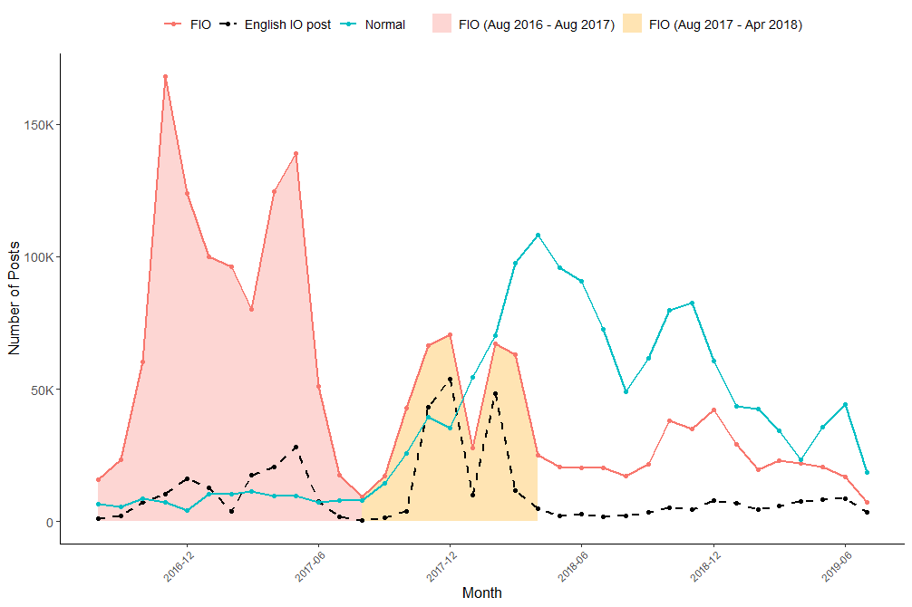
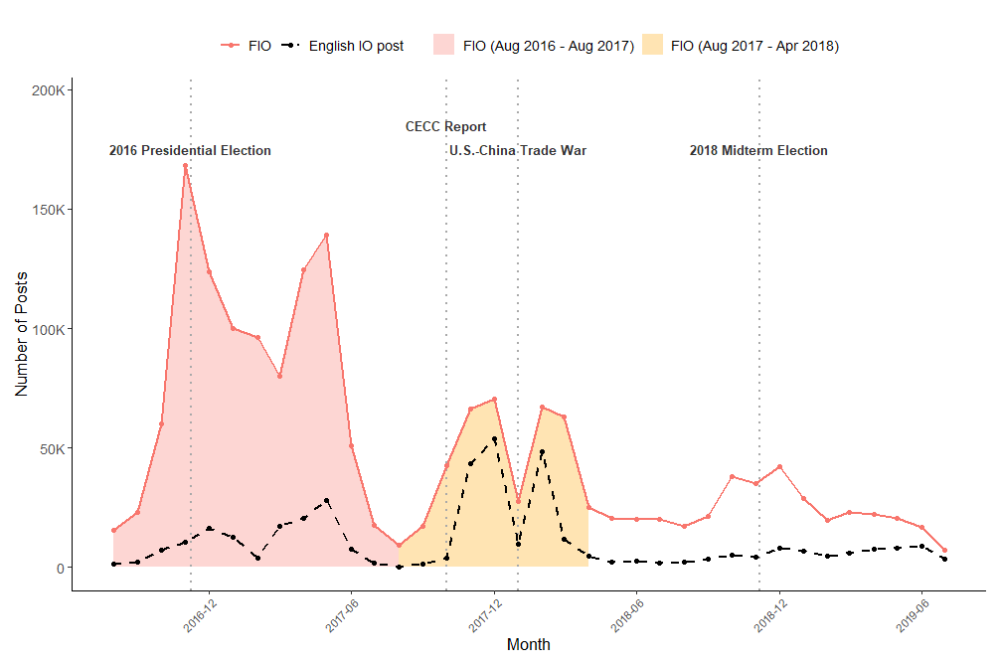
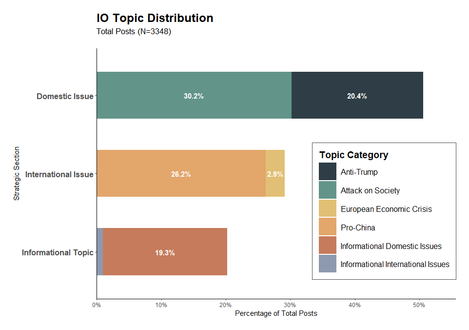
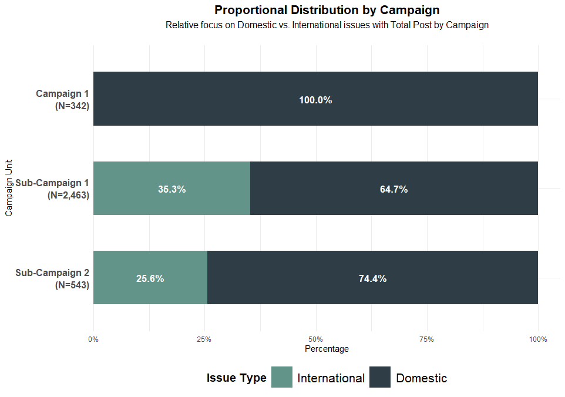
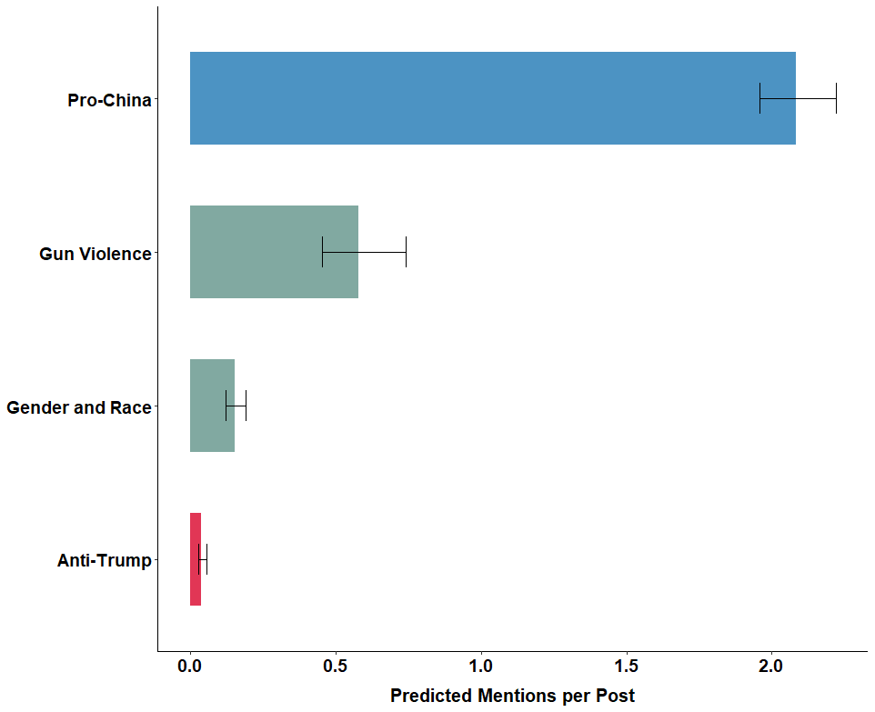
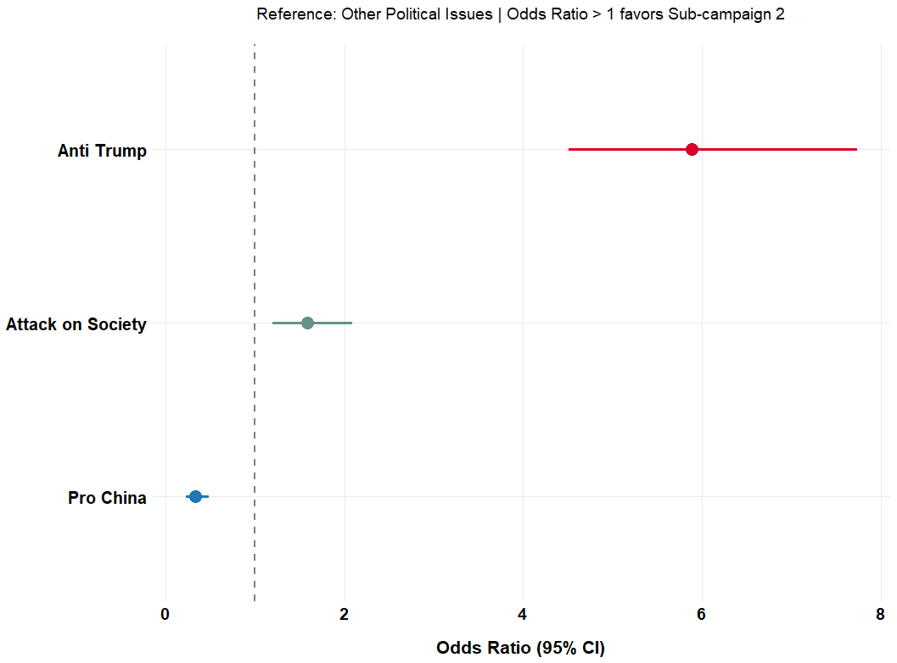
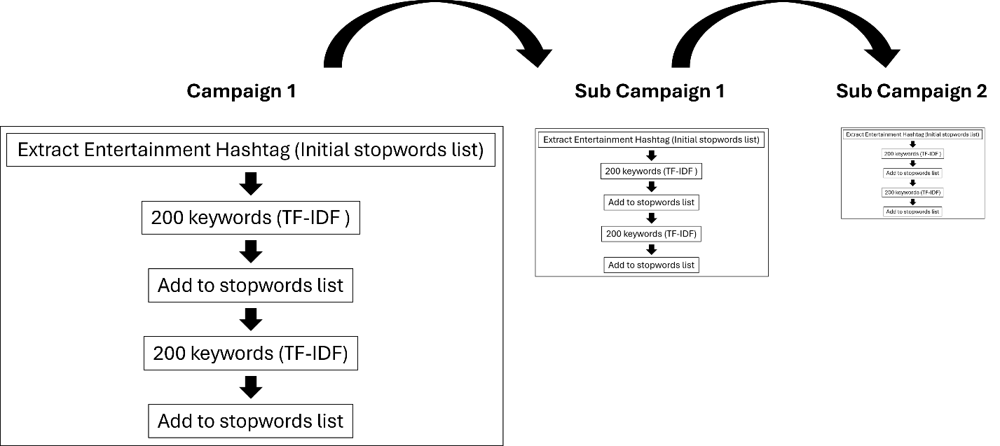
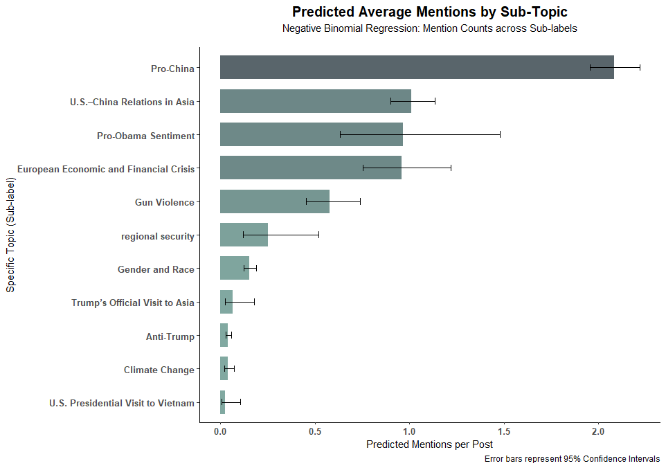
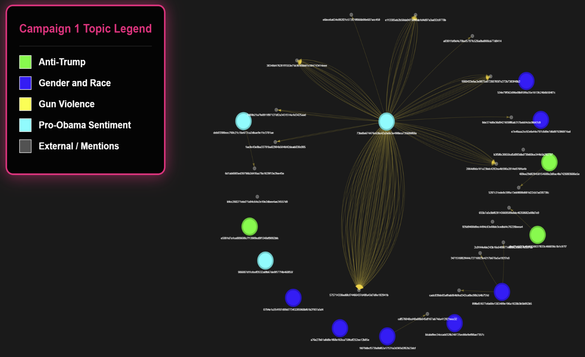
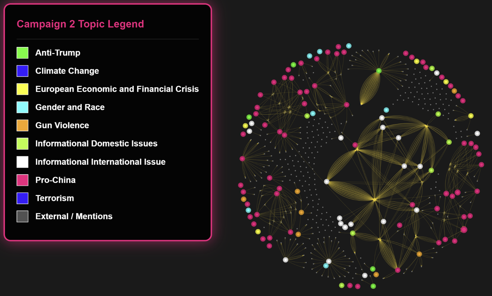

Revealing the Iceberg: Reassessing the Goals, Strategies, and Targets of China's Information Operations
Inwoo Lee
Department of Political Science, Indiana University, Bloomington
Introduction
How do authoritarian governments weaponize information, and what do they seek to achieve through Information Operations (IO)? After Russia's intervention in the 2016 U.S. presidential election, research on authoritarian interference in democratic politics has gained increasing attention, revealing the diverse strategies employed by malign actors to exert influence.1 Such malign activity fosters distrust in democratic systems, distorts civil deliberation, and ultimately poses a serious threat to democratic society.2
However, scholarly attention has been disproportionately centered on Russia's disruptive use of IOs, with existing literature predominantly portraying them as instruments for deepening social divisions (Linvill and Warren 2020; Vargo and Hopp 2020; Vićić and Gartzke 2024). This line of research emphasizes that Russian IOs are typically opportunistic in nature, with messaging calibrated to coincide with salient and sensitive political events in the target country (Etudo et al. 2023). Rather than relying solely on disinformation, IOs exploit preexisting social and political divisions such as ideological polarization or ethnic cleavages to amplify tensions and exacerbate societal fragmentation.3
Yet while this characterization is valuable for understanding the Russian case, it raises important questions about the theoretical generalizability of IOs. If information operations are indeed instruments of state strategy, then we must ask: what strategic objectives do they ultimately serve? While social discord and political polarization in target countries may facilitate the implementation of IOs, they should be seen as enabling conditions rather than end goals. The opportunistic nature of Russian IOs — often concentrated around moments of domestic instability, such as elections or political crises — offers only a partial view of how authoritarian regimes weaponize information. This perspective makes it difficult to account for cross-case variation in IO strategies, particularly in terms of when information operations are deployed and what kinds of messages are emphasized. To develop a more comprehensive understanding of IOs, it is therefore necessary to consider the geopolitical contexts in which they are embedded, including the nature of the sender–target relationship, strategic interests at stake, and the broader international environment, as these factors fundamentally shape the strategic logic behind information operations.
In light of these gaps, China presents a compelling case for re-evaluating the strategic utility of authoritarian IOs. While China also actively employs IOs,4 particularly as tensions with the U.S. have escalated, an analysis of the Chinese case enables us to extend the theoretical boundaries of the weaponization of information beyond mere domestic disruption. Crucially, China integrates information operations into its broader "Three Warfares" doctrine5 — encompassing psychological, public opinion, and legal warfare — positioning IO as a sophisticated and multi-dimensional strategic tool. This doctrinal integration suggests that Chinese IOs are not merely reactive or opportunistic; rather, they are systematically deployed to serve strategic objectives. By accounting for this strategic intentionality, we can better understand how authoritarian regimes calibrate information as a flexible instrument of statecraft to achieve specific geopolitical ends.
Building on this framework, this study investigates the underlying strategic logic of Chinese information operations toward rival country, specifically United States. Specifically, it seeks to address the following research questions: First, how do Chinese IO messaging strategies vary across different geopolitical and domestic political contexts? Second, how does China coordinate and tailor its messages to effectively embed them within U.S. public discourse?
While interest in Chinese information operations is growing, scholarly attention to Chinese "covert" IO is a relatively recent development, and much of the existing research has focused on specific events closely tied to China's core interests. This focus may reflect an overemphasis on a narrow set of topics, namely, Hong Kong, Xinjiang, and the COVID-19 pandemic, which are commonly identified as areas of Chinese "core interests" (Diresta et al. 2020; DiResta et al. 2021; S. Harold, Beauchamp-Mustafaga, and Hornung 2021; Hung and Hung 2022). Although these case-specific analyses provide valuable insights, they are often temporally fixed to specific crises, which limits their ability to explain the broader strategic variation in when and what kinds of messages are disseminated.
Crucially, the existing literature has been preoccupied with how these operations disseminate pro-China narratives intended to burnish the regime's image or defend its red lines. However, a more opportunistic IO pattern has become increasingly evident since the COVID-19 pandemic. These recent developments suggest that Chinese IO is no longer confined to defensive self-promotion; instead, it increasingly weaponizes local political turbulence in target countries, tailoring messages to exacerbate existing domestic discord.6 By shifting from rigid propaganda to flexible, opportunistic interference, China seeks to boost its geopolitical interests more effectively.7
While the opportunistic IO patterns discussed above are often treated as recent phenomena, they likely represent the culmination of strategic expertise and operational know-how accumulated over years of prior experimentation. Within the existing literature, there is a notable analytical void regarding the significant surges in Chinese IO activity that occurred between 2016 and 2018, a period that predates the well-documented 2019 Hong Kong protests and the COVID-19 pandemic. To bridge this gap, first I explore Chinese IO activities in X (twitter) focused on this understudied interval.
The rationale behind this exploration is to provide empirical clarity on a period of intense but largely overlooked activity. My preliminary data analysis reveals a distinct shift in IO patterns beginning in October 2017. Specifically, a significant increase in campaigns targeting English speakers was observed between October 2017 and April 2018. These campaigns coincide with two major geopolitical catalysts: the release of the 2017 U.S. Congressional-Executive Commission on China (CECC) annual report in October 2017, which provided detailed criticism of human rights violations in Tibet and Xinjiang and the onset of the U.S.–China trade war in January 2018.
Building on this preliminary analysis, I investigate the drivers behind these shifting patterns, arguing that this period functioned as a critical strategic learning phase for China to enhance the effectiveness of its operations. Finally, the study examines how China leveraged these specific campaigns to maximize its geopolitical interests, demonstrating the transition from reactive propaganda to proactive strategic coordination.
Preliminary Data Exploration
Social media has provided a favorable environment for conducting the Three Warfares within the broader arena of discourse competition. Recognizing both the risks that social media poses to authoritarian regimes and its potential utility, China has sought to integrate social media into its psychological warfare efforts (S. W. Harold, Beauchamp-Mustafaga, and Hornung 2021), eventually evolving this approach into what is now conceptualized as cognitive warfare (Beauchamp-Mustafaga 2019).
To examine information operations conducted on social media, I use data on Chinese IO accounts that were active on X. These data were obtained from the Indiana University Observatory on Social Media (OSoME), which provides a detailed account of the data collection process in Seckin et al. (2024).8 The FIO accounts are state-backed information operation accounts disclosed by X's Transparency Center.9 For the control group, they use posts from regular accounts that appeared on the same dates and included the same IO-related hashtags, in order to better capture the differences in patterns between FIO and non-FIO accounts. For a detailed description of the data and variable construction, see Appendix A.
Figure 1. Chinese IO vs Normal Posts with English FIO Contents

Figure 1 shows the general trends of Chinese IO campaigns and the activity of normal accounts. There were four notable spikes in Chinese IO activity. The first campaign occurred between December 2014 and July 2015; the second spanned from August 2016 to August 2017; the third extended from August 2017 through April 2018; and the fourth took place from August 2018 to February 2019.10
This trend in Chinese IO activity aligns with the insight of S. W. Harold, Beauchamp-Mustafaga, and Hornung (2021), who found that the People's Liberation Army (PLA) significantly increased its research on social media beginning in 2014, as it began to explore its use as part of a broader public opinion warfare strategy. However, the contrast between the period from August 2016 to August 2017 and the subsequent period from August 2017 to April 2018 warrants closer attention.
In the former period (Campaign 1), IO content volume overwhelmingly outnumbered that of normal posts. This suggests a significant mismatch between the hashtags used by IO accounts and those used by the general public. In essence, Chinese IO actors were disseminating content that remained largely isolated from the actual interests of regular X users.
In contrast, the latter period (Campaign 2) displays a notable reversal: the volume of content from normal accounts began to surpass that of IO accounts. This shift indicates tactical refinement, wherein IO accounts began strategically adopting the same hashtags used by normal accounts. By aligning their messaging with trending or relevant hashtags driven by the public, Chinese IO actors transitioned from shouting in a vacuum to infiltrating and exploiting organic online discourse, thereby increasing the potential for their narratives to blend into domestic discourse.
Figure 2. Chinese IO Posts with Event

Furthermore, a critical observation in Campaign 2 is the surge in English-language posts, a relatively uneventful year in U.S. politics (Figure 2). This shift strongly suggests a recalibration of the target audience toward English speakers.11 Given that this increase in English content coincided with escalating geopolitical tensions with the United States, it can be inferred that these campaigns were specifically tailored to influence the American public. This transition signifies a significant evolutionary step, moving from isolated message to externally oriented IO campaign designed to project influence within the U.S. political information environment.
These explorations provide several critical insights into the evolution of Chinese state-backed operations. First, they reveal an iterative learning process. The shifting patterns between the initial and subsequent campaigns demonstrate a clear attempt to assimilate IO posts into the information environment of U.S. target audiences to facilitate message diffusion. This raises two vital questions: What drove this structural shift in operational patterns, and what thematic differences exist between the messages of the first and second campaigns?
Second, the two distinct operations observed within the latter campaign period allow for an investigation into the specific strategic goals of Chinese IO and whether messaging is calibrated to meet those objectives. This second campaign period can be divided into two distinct phases based on the nature of the geopolitical challenge: defending regime legitimacy (October 2017) and geopolitical competition and economic security (January 2018).
The release of the CECC annual report on human rights in Tibet and Xinjiang directly related China's core interests. For a government that prioritizes regime stability, such international scrutiny represents a significant threat to its global legitimacy. In contrast, the onset of the U.S.–China trade war marked a period of intensified structural competition and economic security crisis. While still linked to stability, the context shifted toward a direct confrontation with a primary geopolitical rival.
This study examines whether China disseminated different IO messages across these two distinct periods and how those messages were organically linked to the state's overarching strategic goals. By analyzing these variations, the following section will demonstrate how China sought to enhance the effectiveness of its information operations and examine the specific mechanisms through which it adapted its message dissemination strategies to suit shifting geopolitical landscapes.
Increasing Effectiveness of Message Dissemination
Did message adaptation occur within IO posts? What message is intended to be disseminated?
I argue that the fundamental difference in patterns between campaign 1 and campaign 2 lies in a topical shift toward greater strategic opportunism. Specifically, campaign 2 likely features content that is more deeply embedded in sensitive U.S. political contexts. To conduct effective IO, China must generate messages that are assimilated into the target country's discourse for two primary reasons: dissemination and concealment.12
To achieve strategic objectives, information operation messages must circulate widely among target audiences. Contemporary online information environments are highly fragmented, with users consuming narrow slices of content reinforced by recommendation and ranking algorithms (Guess et al. 2023; Lu et al. 2025). In such a fragmented ecosystem, traditional propaganda, such as painting a positive image of Tibet or Xinjiang, fails to capture the attention of foreign audiences. Instead, by disseminating content centered on the target country's most salient and sensitive domestic issues, IO actors can penetrate these silos. Given the polarizing nature of such topics, these messages possess a higher inherent potential for viral spread and engagement compared to rigid, state-centric narratives.
The second reason is the necessity of concealment to maximize operational impact. Over-emphasizing pro-China narratives or fixating on a narrow set of Beijing's "red lines" significantly increases the probability of detection by platform moderators and researchers. Furthermore, messages that too clearly articulate China's official position encounter not only limited receptivity but also a backlash among foreign audiences (Bauer and Wilson 2022). To mitigate this, IO actors have incentive to generate content that merges organically with existing public opinion. By laundering their strategic intent through local grievances, they can exert influence while maintaining plausible deniability.
The sustained trajectory of Chinese IO following the 2016 Taiwanese presidential election lends significant empirical weight to this hypothesis. As S. W. Harold, Beauchamp-Mustafaga, and Hornung (2021) categorize, Beijing's information statecraft in Taiwan is characterized by three distinct functional types: 1) steady-state efforts designed to erode social trust independent of specific events, 2) time-bounded campaigns that concentrate resources on discrete goals such as influencing election outcomes, and 3) opportunistic attacks that strategically amplify an adversary's missteps or internal societal grievances.
Consequently, China strategically leverages actual local grievances and unfavorable news to deepen societal fragmentation and paralyze democratic decision-making processes. If these strategies functioned as a testbed in Taiwan starting with the 2016 election, it is highly probable that the strategic lessons refined in Taiwan were applied to the second campaign, which commenced in 2017.
H1: IO posts that focus on U.S. domestic political issues are more likely to receive strategic prioritization by operators than those promoting pro-China narratives (Strategy Adaptation).
Leveraging Information Operations for Strategic Interest Boosting
Information as a Strategic Instrument
If the evolution from campaign 1 to campaign 2 reveals a shift toward opportunistic strategies that exploit the domestic vulnerabilities of target countries, how might this operational pattern be adapted to diverse strategic settings? China employs IO as a strategic instrument under the doctrinal framework of the Three Warfares (U.S. Department of Defense 2013). The Three Warfares consists of three components: psychological warfare, public opinion warfare (also referred to as media warfare), and legal warfare. Lee (2014) posits that psychological warfare is the foundational element of the Three Warfares, asserting that both public opinion and legal warfare essentially function through the same psychological mechanisms to accomplish political and military objectives.
As such, China recognizes the critical importance of influencing psychology and cognition, a focus that has recently evolved into the concepts of cognitive warfare and the "Control of Brainpower" (Beauchamp-Mustafaga 2019; Kania 2020). Consequently, interference in human consciousness is increasingly prioritized as a vital strategic instrument within China's broader statecraft. In this context, social media provides an opportunity to infiltrate and interfere with the cognitive processes of target audiences, allowing for more precise and pervasive psychological manipulation.13
If China utilizes IO as an instrument to achieve specific political ends, its ultimate objective likely extends beyond merely generating social discord or imposing societal costs through manufactured chaos. Rather, there must be a broader strategic intent underlying these efforts. While China's activities in Taiwan include "steady-state efforts designed to erode social trust independent of specific events" (S. W. Harold, Beauchamp-Mustafaga, and Hornung 2021), it would be reductive to categorize its entire IO repertoire through a single strategic lens.
In this regard, the two distinct phases within Campaign 2 offer invaluable cases for analyzing the variations in Chinese IO strategy. Although both sub-campaigns occurred during periods of escalated tension with the United States, the fundamental nature of these conflicts differed significantly. Consequently, these cases provide a unique opportunity to analyze how China's messaging strategies are recalibrated in response to shifting geopolitical situations and varying strategic requirements.
Perennial Legitimacy Challenges vs. Acute Economic Threats
How, then, does the differing nature of these tensions influence China's IO strategies? As illustrated in Figure 2, the periods of activity within the second campaign align with distinct political catalysts. Sub-Campaign 1 coincides with the release of the Congressional-Executive Commission on China (CECC) Reports, which documented the reality of China's human rights repression. In contrast, Sub-Campaign 2 occurred in the immediate aftermath of the U.S.-China Trade War.
Beyond the clear distinction between challenges to regime legitimacy and economic security, these two sub-campaigns also differ in their historical continuity. Human rights concerns represent a long-standing, persistent friction point that transcends individual U.S. administrations. For instance, the CECC has issued annual reports since 2002, and international criticism of China's domestic repression has been a constant feature of the bilateral relationship for decades. Conversely, the Trade War emerged as a sudden, acute crisis for China under the Trump administration. The aggressive posture characterized by tariff escalations and targeted sanctions against Chinese high-tech firms represented a unique and unprecedented shift in U.S. policy toward China. These distinct contexts — one a perennial legitimacy challenge and the other a sudden economic threat — provide a fertile ground for analyzing how China recalibrates its opportunistic messaging to meet varying strategic demands.
How does China disseminate its messaging in response to different geopolitical contexts?
Does the nature of these tensions drive a shift in China's messaging strategy? Drawing on the evolution of Chinese IO in Taiwan and Beijing's long-term strategic objectives, I argue that IO campaigns aimed at regime competition differ from those targeting the U.S.-China Trade War.
Since the beginning of Xi's administration in 2013, the concept of discourse power (话语权, huayu quan) has become a central theme in Chinese foreign policy. Frequently associated with the Xi-era slogan, "tell China's story well," this concept has often been interpreted as an effort to improve China's international image. However, its significance extends beyond image-building. It reflects a strategic ambition to transform China's role from a "discourse taker" to a "discourse maker," a great power capable of asserting its voice and shaping international norms (Zeng and Breslin 2016).14 A critical component of this endeavor is the discursive construction of the Chinese model of governance as a legitimate and viable political system.
To achieve this, China has developed a counter-narrative that promotes the superiority of its own governance while simultaneously portraying American democracy as deeply flawed. In the "Human Rights Record of the United States in 2017",15 published by China's State Council Information Office in April, 2018, China argued that while the U.S. State Department poses as a "guardian of human rights" by releasing global reports, the United States itself suffers from pervasive human rights violations, including rampant gun violence, systemic racism, hate crimes, and a widening wealth gap. Building on this, the 2018 report expanded its critique by emphasizing the corrupting influence of "money politics." It further highlighted the prevalence of internet surveillance within the U.S., intensifying its efforts to delegitimize American society by framing these issues not as isolated incidents, but as inherent systemic failures of democracy.16
To sustain this narrative competition, China must continuously portray the United States as a declining power plagued by "societal sickness." This serves as a potent tool for domestic propaganda aimed at reinforcing regime legitimacy. By framing international issues through the lens of a flawed Western democracy, Beijing cultivates a narrative of "ordered stability" at home versus "chaotic democracy" abroad. Carter and Carter (2023) indicates that when China incorporates international events into its domestic propaganda, it deliberately constructs and disseminates these narratives to validate its own authoritarian model as the superior alternative.
Sub-campaign 1 is primarily driven by regime competition, suggesting a high probability that China disseminated narratives centered on sensitive and polarized domestic issues within the U.S. While a 2024 report by Microsoft's threat intelligence team observed China testing the "fault lines" of voter division in the U.S. (Watts 2024), I argue that this opportunistic IO pattern likely emerged much earlier, serving as a tactical precursor that informed and refined recent IO strategies.
This shift mirrors observed patterns in Taiwan, where Chinese IO has evolved beyond direct attacks on pro-independence parties and politicians toward exploiting cultural and societal polarizations to destabilize the social fabric as a whole (S. W. Harold, Beauchamp-Mustafaga, and Hornung 2021). It is highly probable that the strategic "know-how" refined in Taiwan, serving as a primary testbed, was integrated into this earlier phase of operations to exacerbate internal divisions within the American electorate.
In contrast, sub-campaign 2 presents a case where a specific, identifiable opponent, the Trump administration, emerged. To neutralize the tangible threat posed by the administration's comprehensive economic pressure on China, Beijing likely employed a strategy aimed at inflicting direct political damage on the Trump presidency. The objective would have been to impede the administration's policy-making process and compel a shift in its hardline stance.
This tactical shift aligns with established disinformation patterns observed in Taiwan, where China has a history of discrediting specific opposing politicians and regimes whenever a clear adversary is identified (S. W. Harold, Beauchamp-Mustafaga, and Hornung 2021). Recent reports from the International Institute for Strategic Studies (IISS) further corroborate this trend, documenting how China selectively targets and delegitimizes specific political actors in direct response to geopolitical events (Voo 2024). Consequently, while Sub-campaign 1 sought to undermine the democratic system at large, Sub-campaign 2 represents a more pragmatic, tactical effort to weaken a specific political leadership during an acute economic crisis.
H2a: Sub-campaign 1 will contain more narratives on sensitive and polarized U.S. societal issues than Sub-campaign 2 (Strategic Calibration).
H2b: Sub-campaign 2 will contain more delegitimizing messages targeting President Trump or his administration (Strategic Calibration).
Research Design
Variables
The dependent variable (DV) for the first hypothesis — operators' strategic prioritization — is measured as inauthentic amplification of posts by IO accounts. Specifically, this refers to the number of times an IO account that discusses political issues mentions another IO account. The DV for the second hypothesis is the type of sub-campaign, designed to test whether different message patterns emerge under varying conflict dynamics across different time periods.
The independent variable (IV) for both Hypothesis 1 and Hypothesis 2 are operationalized through a thematic classification of posts, based on the identified IO topic categories. The classification includes four categories: Attack on Trump, Attack on U.S. Society, Pro-China, and Other Political Issues.
To analyze the content, I employed the BERTopic model for automated topic modeling. BERTopic was applied separately to each campaign. Descriptive statistics for the IO posts analyzed are presented in Table 1.
Table 1. Summary of Post Volume by Campaign and Time Period
| Campaign | Total Count | Months | Avg Posts / Month | Peak Monthly |
|---|---|---|---|---|
| Campaign 1 | 129,796 | 12 | 10,816 | 28,170 |
| Sub-Campaign 1 | 102,698 | 5 | 20,539 | 53,620 |
| Sub-Campaign 2 | 70,349 | 3 | 23,449 | 48,194 |
Despite the differing durations of each campaign, IO activity became significantly more active during Campaign 2, suggesting a marked increase following the shift in campaign patterns. The distribution of topics identified through modeling for total period is presented in Figure 3.17 As shown in Figure 3, China's IO strategy did not merely focus on disseminating pro-China messages; rather, a substantial number of posts addressed U.S. domestic political issues. In fact, pro-China messages accounted for only 26% of the total posts during the entire period.
Among the 302,843 posts generated by the identified IO accounts during the study period, only 3,348 were classified as political content. While it is possible that the topic modeling did not fully capture politically relevant posts, this pattern has been reported (DiResta et al. 2021). Several explanations may account for this trend.
First, it may reflect a strategy of building followers. IO accounts often post spam, entertainment, race-related, or hobby-focused content to establish networks and embed themselves within online communities. This approach allows them to disseminate targeted political messages at a strategically chosen time (DiResta et al. 2021).
Second, this behavior may represent camouflage. Given that social media platforms often identify IO accounts by detecting patterns aligned with pro-China narratives and associated contextual cues, IO actors may deliberately post neutral or unrelated content to avoid detection and appear as normal users.18
Finally, the pattern may be related to account preservation. According to X's inactive account policy, accounts must remain active to avoid permanent removal. Since IO accounts are considered strategic assets, either deactivation due to inactivity or removal due to detection would represent a significant loss.19
Figure 3. Topic Distribution by IO Account

Model
To test Hypothesis 1, I employed both a Poisson regression model and a Negative Binomial (NB) regression model. The dispersion parameter for the Poisson model was 0.96, indicating no substantial violation of model assumption. However, to ensure robustness, the NB model was also estimated. For Hypothesis 2, I applied a logistic regression model.
Findings
Increase in Domestic Issue Focus
I begin by analyzing the shifting patterns between Campaign 1 and Campaign 2. As illustrated in Figure 4, there are clear distinctions between the two. In Campaign 1, no posts addressed international issues, whereas 342 posts focused on U.S. domestic issues. In contrast, Campaign 2 marks a significant shift, with a substantial increase in posts related to U.S. domestic political issues.
A closer look at the sub-campaigns within Campaign 2 reveals important nuances. In Sub-Campaign 1, the proportion of domestic issues appears to decline; however, this is primarily due to the complete absence of international issue-related topics in Campaign 1, which skews the comparison. Despite this relative decline, Sub-Campaign 1 still demonstrates a strong emphasis on politically controversial U.S. domestic issues, while simultaneously amplifying pro-Chinese narratives.
Figure 4. Proportion of Topic by Campaign20

This trend becomes even more pronounced in Sub-Campaign 2, where the focus on domestic issues further intensifies. This is a noteworthy finding, especially considering that much of the existing literature on Chinese IO campaigns has concentrated on overtly pro-China content and issues directly related to China.
Overall, compared to Campaign 1, posts related to U.S. domestic political issues increased by a factor of 5.84 in Campaign 2. At the same time, the volume of posts addressing international issues also rose, with 87% of these promoting pro-China narratives.
Inauthentic Post Amplification Pattern21
The disproportionate focus of Chinese IO posts on U.S. domestic issues, rather than on China-related topics, suggests an opportunistic strategy aimed at exacerbating social discord in the target country, similar to patterns observed in Russian information operations. This indicates an intent to exploit existing societal divisions for strategic gain.
Figure 5. Average Mentions by Selected Sub-Topic22

However, the pattern of inauthentic amplification reveals a noteworthy distinction. Figure 5 illustrates which topics were most actively amplified through coordinated inauthentic behavior. The analysis shows that posts promoting pro-China narratives mention, on average, more than two other IO accounts, indicating a high level of coordinated amplification. In contrast, posts addressing U.S. domestic issues, such as gun violence, gender and race, and anti-Trump rhetoric, received fewer than one mention on average, suggesting lower levels of inauthentic amplification for these topics.
This pattern reflects China's dual messaging strategy. First, Chinese IO efforts tailor messages to U.S. domestic issues in an attempt to distort public discourse and deepen internal divisions. Simultaneously, there is a concerted effort to amplify pro-China narratives through coordinated inauthentic behavior. However, the intensified inauthentic amplification of these pro-China messages likely reflects a recognition among Chinese propagandists that such narratives fail to organically resonate with American audiences and therefore require artificial boosting to gain visibility.
Different Messaging Strategy in Two Different Campaign Periods
The results of the logistic regression analysis indicate a clear difference in messaging types between Sub-Campaign 1 and Sub-Campaign 2. The odds ratio for anti-Trump messages is 6, suggesting a significantly higher likelihood that such messages appear in Sub-Campaign 2. Additionally, messages classified as attacks on U.S. society were also more likely to be present in Campaign 2, indicating a continued focus on domestically sensitive issues.
One possible interpretation of these findings is that socially sensitive issues in the U.S. are often partisan and politically polarized. In this context, Chinese IO efforts may be strategically designed to both attack the Trump administration (or Trump personally) and to exacerbate domestic social discord. Such efforts could serve to undermine the legitimacy or effectiveness of the Trump administration's policy implementation by increasing public resistance and political pressure through the amplification of divisive narratives.
However, the messaging calibration hypothesis based on geopolitical context has not yet been empirically verified. While the observed differences in messaging between the two sub-campaigns suggest variation in strategic focus, they do not, on their own, substantiate my theoretical claim. Nonetheless, during non-election periods, key events in U.S.–China relations appear to correspond with distinct messaging strategies across sub-campaigns. This pattern suggests that geopolitical context may influence the design and timing of information operations. Incorporating this perspective could offer important theoretical advancements in the study of information operations.
Figure 6. Likelihood of Being in Sub-campaign 2 by Topic23

Discussion and Implications
I have argued that scholarly attention to China's information operations should be expanded beyond the current focus on pro-China narratives. It is necessary to consider not only the societal dimensions within the target country but also the broader geopolitical context in which these operations occur. To validate and illustrate this framework, I analyze China's IO activities within the United States from 2017 to 2018, specifically focusing on X.
The findings indicate that China does not merely disseminate pro-China messages; rather, it strategically exploits highly sensitive and polarized issues within the United States. This opportunistic pattern varies according to the dynamics of geopolitical conflict, demonstrating a degree of responsiveness to changes in the international environment. Furthermore, while China's messaging strategy addressed highly salient and polarized domestic issues, its inauthentic amplification efforts were disproportionately concentrated on promoting pro-China narratives. This suggests that although domestic themes were used to contextualize or frame content, the core objective of amplification was to boost the visibility of messages aligned with China's strategic interests.
The results highlight the partial nature of existing research on Chinese IO. While prior studies correctly identify China's efforts to spread pro-China messages, they often overlook the nuanced strategies embedded within these campaigns. My research shows that geopolitical events appear to act as triggers for information operations. This supports the argument that the conflictual dynamics between the disseminating and target states directly influence IO strategies. Consequently, there is a pressing need to incorporate geopolitical context — specifically, the strategic goals associated with different conflict dynamics — into a new theoretical framework for IO research.
That said, the current study stops short of empirically validating the theoretical claim that China's messaging patterns are systematically calibrated in response to changing geopolitical contexts. Whether these observed patterns are the result of deliberate strategic adjustments by IO operators remains an open question. Nevertheless, the study offers valuable insights for future theory building.
My initial hypothesis posited that different contextual settings (independent variable) across time periods would influence messaging patterns (dependent variable). To transform this into a falsifiable theory, further theoretical refinement is required. In this study, I reverse the independent and dependent variables to examine whether specific issue groups are more likely to appear in Sub-campaign 2. By testing whether messaging strategies differ across campaigns, I find that the results align with my expectations. These findings provide a foundation for developing a more robust theoretical framework in future research.
Footnotes
- 1.For comprehensive analyses of election interference conducted by foreign actors, see (Tenove et al. 2018). ↩
- 2.Tomz and Weeks (2020) find that public responses to foreign intervention are polarized along partisan lines — individuals are more critical when such actions support the opposing party, but more tolerant when their own side benefits. This partisan asymmetry undermines trust in democratic institutions and makes unified responses difficult. As a result, polarized societies become particularly vulnerable to foreign information manipulation, especially in the absence of credible retaliatory threats. ↩
- 3.Vićić and Gartzke (2024) refer to the dissemination of factually false information as the "big lie." In contrast, they highlight that Russia's social media interventions are often context-based operations that strategically leverage existing sources. ↩
- 4.For a comprehensive discussion on the diverse forms of influence operations conducted by China, see Ornelas (2022); Regarding Chinese IOs focused on "core interests" such as Hong Kong, Xinjiang, and the COVID-19 pandemic, see Diresta et al. (2020), DiResta et al. (2021), S. Harold, Beauchamp-Mustafaga, and Hornung (2021); Kurlantzick (2020); For research on Chinese IOs targeting Taiwan and the broader Asian region, see Hung and Hung (2022), Voo (2024); For those directed at the United States, see Serabian and Foster (2021), Strick (2021). ↩
- 5.The Three Warfares consists of three components: psychological warfare, public opinion warfare (also referred to as media warfare), and legal warfare. Psychological warfare aims to undermine an adversary's ability to make decisions by sowing doubt, encouraging dissent against leadership, spreading deception, and weakening the opponent's resolve to resist. Public opinion warfare refers to a sustained and continuous effort to mold public perceptions and attitudes over the long term. Legal warfare entails leveraging both domestic legislation and international legal frameworks to justify and reinforce China's narratives and its political or territorial positions (Lee 2014). ↩
- 6.For instance, during the COVID-19 pandemic, Chinese IO networks exploited the rise in anti-Asian hate crimes by disseminating multilingual content in Japanese, Korean, and English targeting Asian American communities. These messages, such as "Shut your mouth, don't make fake news about COVID-19." (Serabian and Foster 2021; Watts 2024) Furthermore, more recent reports indicate that Chinese IO has pivoted toward fabricating and amplifying divisive content regarding U.S. voter polarization, demonstrating a shift toward exploiting internal domestic fractures to undermine social cohesion in the target country. ↩
- 7.During the 7th anniversary of the South China Sea arbitration in 2023, Chinese IO did not merely rely on asserting Beijing's sovereignty; it went a step further by strategically amplifying the voices of specific Philippine political leaders whose positions aligned with or did not actively challenge China's maritime claims. By moving beyond overt propaganda to selectively bolster favorable local actors, China seeks to foster domestic fragmentation within the target state. Similarly, during the 2022 Taiwan Strait crisis, the focus shifted toward discrediting both U.S. and pro-independence Taiwanese leaders. These cases reveal a strategic evolution where China integrates defensive pro-China messaging with proactive, context-specific coordination to undermine adversaries and secure geopolitical advantages (Voo 2024). ↩
- 8.This dataset covers IO campaigns from 15 countries and can be requested from https://zenodo.org/records/14189193. ↩
- 9.Currently, X's data on information operations (IO) is no longer publicly available, and the criteria for identifying state-backed IO accounts are also no longer disclosed. To address this limitation, I consulted the Internet Archive's Wayback Machine to examine historical versions of X's Transparency Center. Through this archive, I was able to recover and verify the platform's previously stated criteria for identifying IO accounts. According to the archived records, platform manipulation accounts include those engaged in artificial content amplification and coordinated activity involving multiple or deceptively fake accounts. For nationality attribution, Transparency Center identified accounts as state-linked based on their dissemination of narratives aligned with the Chinese government. According to the testimony of then-CEO Jack Dorsey at the Senate Select Committee on Intelligence in September 2018, X identified accounts that disseminated narratives aligned with specific states and subsequently used contextual understanding to detect malign accounts. ↩
- 10.The criteria for identifying a spike are as follows. On average, the volume of IO content remained below 25,000. A spike is defined as a period beginning when the content volume starts to increase and ending when it reaches its lowest point following the rise. ↩
- 11.This implied topical shift does not necessarily indicate a strategic transformation in China's information operations. Rather, it may simply reflect a follower build-up stage, in which non-political content is used to establish social networks that can later facilitate the wider dissemination of IO messages (Beauchamp-Mustafaga et al. 2024; DiResta et al. 2021). Moreover, even if the number of English-language posts addressing political issues increases, pro-Chinese narratives may still remain dominant within the overall messaging structure (Beauchamp-Mustafaga et al. 2024; DiResta et al. 2021). ↩
- 12.Chinese IO expert Li (2019) argued that traditional IO messaging often suffers from inefficient delivery and a lack of authenticity, making it easily detectable by target audiences. While his critique specifically addressed the limitations of standard, "macro-style" automated bots and sought to theorize the use of more sophisticated, intelligent bots, it reflects a foundational awareness of the core challenges facing effective IO. Li Bicheng [李弼程], Hu Huaping [胡华平], and Xiong Yao [熊尧], "Intelligent Agent Model for Online Public Opinion Guidance" ["网络舆情引导智能代理模型"], National Defense Technology [国防科技], June 2019. ↩
- 13.For detailed discussions on the evolution of China's IO within the framework of the "Three Warfares," as well as Beijing's strategic approach to and execution of IO via social media, see S. W. Harold, Beauchamp-Mustafaga, and Hornung (2021). ↩
- 14.This ambition can be understood as part of China's broader effort to align its rising national power with a commensurate international status. As China's material capabilities have grown, its foreign policy discourse has shifted from a traditionally defensive posture to a more assertive and proactive one. The 2012 articulation of a "new type of great power relations" (新型大国关系, xinxing daguo guanxi) illustrates this shift, marking a redefinition of China's global role and responsibilities. ↩
- 15.http://english.scio.gov.cn/scionews/2018-04/25/content_50960455.htm ↩
- 16.In the most recent report, The State of Democracy in the United States: 2022, China's Ministry of Foreign Affairs explicitly describes American democracy as suffering from "chronic ills." The report further asserts that the U.S. judicial system has become "blind to public opinion" and employs increasingly provocative section headings to criticize the structural failings of the American political model. https://www.mfa.gov.cn/eng/zy/gb/202405/t20240531_11367488.html ↩
- 17.See Appendix B for details on the BERT topic modeling procedure and labeling criteria. ↩
- 18.Testimony of then-CEO Jack Dorsey at the Senate Select Committee on Intelligence in September 2018: https://www.intelligence.senate.gov/wp-content/uploads/2024/08/sites-default-files-documents-os-jdorsey-090518.pdf ↩
- 19.Twitter Help Center, https://help.x.com/en/rules-and-policies/inactive-x-accounts (accessed January 29, 2016). ↩
- 20.One particularly notable pattern is the emergence of the European Economic and Financial Crisis as a distinct topic. This may represent a counter-narrative strategy aimed at highlighting economic instability in Western societies, possibly in response to the U.S.–China trade war that began during the first Trump administration. ↩
- 21.See Appendix C for the regression tables. ↩
- 22.Only topics that were statistically significant among the different topic categories were included in the results. ↩
- 23.See Appendix C for the regression table. ↩
References
Bauer, Fin, and Kimberly L. Wilson. 2022. "Reactions to China-Linked Fake News: Experimental Evidence from Taiwan." The China Quarterly 249: 21–46. doi:10.1017/S030574102100134X.
Beauchamp-Mustafaga, Nathan. 2019. "Cognitive Domain Operations: The PLA's New Holistic Concept for Influence Operations." China Brief 19(16). https://www.rand.org/pubs/external_publications/EP68632.html.
Beauchamp-Mustafaga, Nathan, Kieran Green, William Marcellino, Sale Lilly, and Jackson Smith. 2024. Dr. Li Bicheng, or How China Learned to Stop Worrying and Love Social Media Manipulation: Insights Into Chinese Use of Generative AI and Social Bots from the Career of a PLA Researcher. https://www.rand.org/pubs/research_reports/RRA2679-1.html.
Carter, Erin B., and Brett L. Carter. 2023. Propaganda in Autocracies: Institutions, Information, and the Politics of Belief (Political Economy of Institutions and Decisions). Cambridge University Press.
DiResta, Renée, Josh A Goldstein, Carly Miller, and Harvey Wang. 2021. "One Topic, Two Networks: Evaluating Two Chinese Influence Operations on Twitter Related to Xinjiang."
Diresta, Renée, Carly Miller, Vanessa Molter, John Pomfret, and Glenn Tiffert. 2020. "Telling China's Story: The Chinese Communist Party's Campaign to Shape Global Narratives." Hoover Institution.
Etudo, Ugochukwu, Christopher Whyte, Victoria Yoon, and Niam Yaraghi. 2023. "Russia with Fear: Fear Appeals and the Patterns of Cyber-Enabled Influence Operations." Journal of Cybersecurity 9(1): tyad016. doi:10.1093/cybsec/tyad016.
Guess, Andrew M., Neil Malhotra, Jennifer Pan, Pablo Barberá, Hunt Allcott, Taylor Brown, Adriana Crespo-Tenorio, et al. 2023. "How Do Social Media Feed Algorithms Affect Attitudes and Behavior in an Election Campaign?" Science 381(6656): 398–404. doi:10.1126/science.abp9364.
Harold, Scott, Nathan Beauchamp-Mustafaga, and Jeffrey W. Hornung. 2021. Chinese Disinformation Efforts on Social Media. Santa Monica: RAND Corporation.
Harold, Scott W, Nathan Beauchamp-Mustafaga, and Jeffrey W Hornung. 2021. Chinese Disinformation Efforts on Social Media. RAND.
Hung, Tzu-Chieh, and Tzu-Wei Hung. 2022. "How China's Cognitive Warfare Works: A Frontline Perspective of Taiwan's Anti-Disinformation Wars." Journal of Global Security Studies 7(4): ogac016. doi:10.1093/jogss/ogac016.
Kania, Elsa B., ed. 2020. "Chapter 4. The Ideological Battle Field: China's Approach to Political Warfare and Propaganda in an Age of Cyber Conflict." In Information Warfare in the Age of Cyber Conflict, Routledge, 42–53. doi:10.4324/9780429470509.
Kurlantzick, Joshua. 2020. "How China Ramped Up Disinformation Efforts During the Pandemic." Council on Foreign Relations. https://www.cfr.org/in-brief/how-china-ramped-disinformation-efforts-during-pandemic.
Lee, Sangkuk. 2014. "China's 'Three Warfares': Origins, Applications, and Organizations." Journal of Strategic Studies 37(2): 198–221. doi:10.1080/01402390.2013.870071.
Linvill, Darren L., and Patrick L. Warren. 2020. "Troll Factories: Manufacturing Specialized Disinformation on Twitter." Political Communication 37(4): 447–67. doi:10.1080/10584609.2020.1718257.
Lu, Yingdan, Jennifer Pan, Xu Xu, and Yiqing Xu. 2025. "Decentralized Propaganda in the Era of Digital Media: The Massive Presence of the Chinese State on Douyin." American Journal of Political Science (1–17). doi:10.1111/ajps.12990.
Ornelas, Maj Timothy A. 2022. "Chinese Communist Party Influence Operations." Marine Corps Gazette.
Seckin, Ozgur Can, Manita Pote, Alexander Nwala, Lake Yin, Luca Luceri, Alessandro Flammini, and Filippo Menczer. 2024. "Labeled Datasets for Research on Information Operations." doi:10.48550/arXiv.2411.10609.
Serabian, Ryan, and Lee Foster. 2021. "Pro-PRC Influence Campaign Expands to Dozens of Social Media Platforms, Websites, and Forums in at Least Seven Languages, Attempted to Physically Mobilize Protesters in the U.S." Google Cloud Blog. https://cloud.google.com/blog/topics/threat-intelligence/pro-prc-influence-campaign-expands-dozens-social-media-platforms-websites-and-forums.
Strick, Benjamin. 2021. "Analysis of the Pro-China Propaganda Network Targeting International Narratives." Center for Information Resilience.
Tenove, Chris, Jordan Buffie, Spencer McKay, and David Moscrop. 2018. "Digital Threats to Democratic Elections: How Foreign Actors Use Digital Techniques to Undermine Democracy." SSRN Electronic Journal. doi:10.2139/ssrn.3235819.
Tomz, Michael, and Jessica L. P. Weeks. 2020. "Public Opinion and Foreign Electoral Intervention." American Political Science Review 114(3): 856–73. doi:10.1017/S0003055420000064.
U.S. Department of Defense. 2013. China: The Three Warfares. Washington Headquarters Services. Declassified document.
Vargo, Chris J., and Toby Hopp. 2020. "Fear, Anger, and Political Advertisement Engagement: A Computational Case Study of Russian-Linked Facebook and Instagram Content." Journalism & Mass Communication Quarterly 97(3): 743–61. doi:10.1177/1077699020911884.
Vićić, Jelena, and Erik Gartzke. 2024. "Cyber-Enabled Influence Operations as a 'Center of Gravity' in Cyberconflict: The Example of Russian Foreign Interference in the 2016 US Federal Election." Journal of Peace Research 61(1): 10–27. doi:10.1177/00223433231225814.
Voo, Julia. 2024. "Driving Wedges: China's Disinformation Campaigns in the Asia-Pacific." In Asia-Pacific Regional Security Assessment 2024, London: Routledge, 108–23. doi:10.4324/9781003530060-6.
Watts, Clint. 2024. "China Tests US Voter Fault Lines and Ramps AI Content to Boost Its Geopolitical Interests." Microsoft On the Issues. https://blogs.microsoft.com/on-the-issues/2024/04/04/china-ai-influence-elections-mtac-cybersecurity/.
Zeng, Jinghan, and Shuan Breslin. 2016. "China's 'New Type of Great Power Relations': A G2 with Chinese Characteristics?" International Affairs 92(4): 773–94. doi:10.1111/1468-2346.12656.
Appendix A. Data Description
A.1. Source
Seckin, O. C., Pote, M., Nwala, A. C., Yin, L., Luceri, L., Flammini, A., & Menczer, F. (2025, June). Labeled datasets for research on information operations. In Proceedings of the International AAAI Conference on Web and Social Media (Vol. 19, pp. 2567-2574).
I am grateful to the Indiana University Observatory on Social Media (OSoME) for granting access to the dataset.
A.2. General Description
These datasets contain data curated for research on information operations (IO) and include both labeled IO and control data. The datasets cover 26 verified IO campaigns from various countries and provide comprehensive records of posts from IO accounts alongside control posts from legitimate accounts discussing similar topics during the same periods.
A.3. Data Collection Method
A.3.1. Information Operation
- They collected data from a public archive containing information on state-sponsored IOs, made available by a social media platform on its transparency website.
- However, OSoME has ceased disclosing which data it collects, as the IO dataset is no longer publicly accessible.
A.3.2. Control Data
- First, they gathered all the hashtags used by IO accounts in a given IO campaign to identify control accounts discussing similar topics.
- The control datasets for China_1 and China_2 were collected independently.
- Second, they utilized these hashtags as queries to identify accounts that had been posted on the same dates and used the same hashtags as the IO accounts, using the platform's API.
- Finally, they reconstructed the daily timelines of the control accounts by extracting up to 100 messages posted on the same dates as the IO accounts.
A.4. Dataset Content
The dataset includes anonymized fields to preserve privacy, structured with the following columns:
A.5. File Name Description
Example: China_1, China_2 | Russia_1, 2, 3, 4, … etc. The platform transparency website classified these two as separate IOs.
A.6. Limitation of the Dataset
The control accounts were not randomly sampled. As detailed in Seckin et al. (2024), there are key limitations in how the control account data were constructed. First, the timelines of control accounts are cropped at 100 posts and exclude content after the inclusion date, leading to a mismatch in temporal coverage compared to IO accounts. Additionally, there is asymmetry in topical coverage: control account posts are not restricted to topics present in IO content. These limitations mean the control sample is not fully comparable to the IO sample.
However, the primary focus of this study is on IO accounts. The IO account data used in this study were fully provided by the platform, which minimizes concerns regarding data completeness or sampling bias on the IO side. That said, additional caution is necessary when interpreting results related to Hypothesis 2.
Appendix B. Topic Modeling
B.1. Overall Process
First, I divided the dataset by campaign and applied BERTopic separately to each subset. I used a combination of customized stopwords and the default English stopwords from the BERT model. To identify politically relevant topics, I initially conducted topic modeling on posts from both IO and normal accounts combined. From the resulting topics, I extracted the top 30 keywords from each political topic and used them as guide keywords in subsequent modeling.
B.2. Building Customized Stopwords
Most of the posts on IO accounts were related to everyday life and entertainment, primarily aimed at follower buildup and content concealment. A hashtag-based approach was used to identify and extract all entertainment-related hashtags, compiled into a stopwords list. The refined stopwords were then reapplied iteratively until a satisfactory level of keyword refinement was achieved.

B.3. Building Guide Keywords
To construct guide keywords related to political issues, I conducted a hashtag-based model to generate topics as finely grained as possible. From approximately 450,000 posts, 930 topics were generated, from which politically relevant keywords were selected. As a result, 1,945 political posts were identified and sub-category labeled.
B.4. Topic Selection
Following the hyperparameter tuning guidelines provided by BERTopic, I adjusted the model parameters accordingly. Topic modeling was conducted separately for Campaign 1, Sub-campaign 1, and Sub-campaign 2, producing 965 topics for Campaign 1, 930 topics for Sub-campaign 1, and 275 topics for Sub-campaign 2.
Appendix C. Regression Tables
Table 6. Negative Binomial Regression Results for H1
| Variable | Estimate | Std. Error | z value | Pr(>|z|) |
|---|---|---|---|---|
| (Intercept) | −3.2321 | 0.1941 | −16.655 | < 2e-16 *** |
| Climate Change | −0.0345 | 0.3881 | −0.089 | 0.929 |
| European Econ. Crisis | 3.1905 | 0.2295 | 13.902 | < 2e-16 *** |
| Gender and Race | 1.3558 | 0.2241 | 6.051 | 1.44e-09 *** |
| Gun Violence | 2.6869 | 0.2308 | 11.642 | < 2e-16 *** |
| Pro-China | 3.9666 | 0.1967 | 20.164 | < 2e-16 *** |
| Pro-Obama Sentiment | 3.1993 | 0.2912 | 10.986 | < 2e-16 *** |
| Regional Security | 1.8458 | 0.4196 | 4.399 | 1.09e-05 *** |
| Trump's Asia Visit | 0.5075 | 0.5428 | 0.935 | 0.350 |
| U.S.–China Relations | 3.2420 | 0.2029 | 15.976 | < 2e-16 *** |
| U.S. Vietnam Visit | −0.4185 | 0.7370 | −0.568 | 0.570 |
Note: Reference category = Anti-Trump. Significance codes: 0 '***' 0.001 '**' 0.01 '*' 0.05
Table 7. Poisson Regression Results for H1
| Variable | Estimate | Std. Error | z value | Pr(>|z|) |
|---|---|---|---|---|
| (Intercept) | −3.2321 | 0.1925 | −16.795 | < 2e-16 *** |
| Climate Change | −0.0345 | 0.3849 | −0.090 | 0.929 |
| European Econ. Crisis | 3.1905 | 0.2184 | 14.612 | < 2e-16 *** |
| Gender and Race | 1.3558 | 0.2209 | 6.137 | 8.39e-10 *** |
| Gun Violence | 2.6869 | 0.2226 | 12.072 | < 2e-16 *** |
| Pro-China | 3.9666 | 0.1939 | 20.460 | < 2e-16 *** |
| Pro-Obama Sentiment | 3.1993 | 0.2653 | 12.060 | < 2e-16 *** |
| Regional Security | 1.8458 | 0.4196 | 4.399 | 1.09e-05 *** |
| Trump's Asia Visit | 0.5075 | 0.5358 | 0.935 | 0.350 |
| U.S.–China Relations | 3.2420 | 0.1987 | 16.313 | < 2e-16 *** |
| U.S. Vietnam Visit | −0.4185 | 0.7328 | −0.568 | 0.570 |
Note: Reference category = Anti-Trump. Significance codes: 0 '***' 0.001 '**' 0.01 '*' 0.05. Dispersion Ratio: 0.9583
Table 8. Logistic Regression Results for H2
| Variable | Estimate (β) | Std. Error | z value | Pr(>|z|) |
|---|---|---|---|---|
| (Intercept) | −0.3748 | 0.0049 | −76.31 | < 2e-16 *** |
| Anti-Trump | 0.2129 | 0.0852 | 2.50 | 0.0124 * |
| Attack on Society | −1.1003 | 0.0913 | −12.06 | < 2e-16 *** |
Note: Reference group is Other/Control issues. Dependent variable is Sub-campaign 2 (vs. 1). Significance codes: 0 '***' 0.001 '**' 0.01 '*' 0.05
Appendix D. Inauthentic Amplification Patterns


